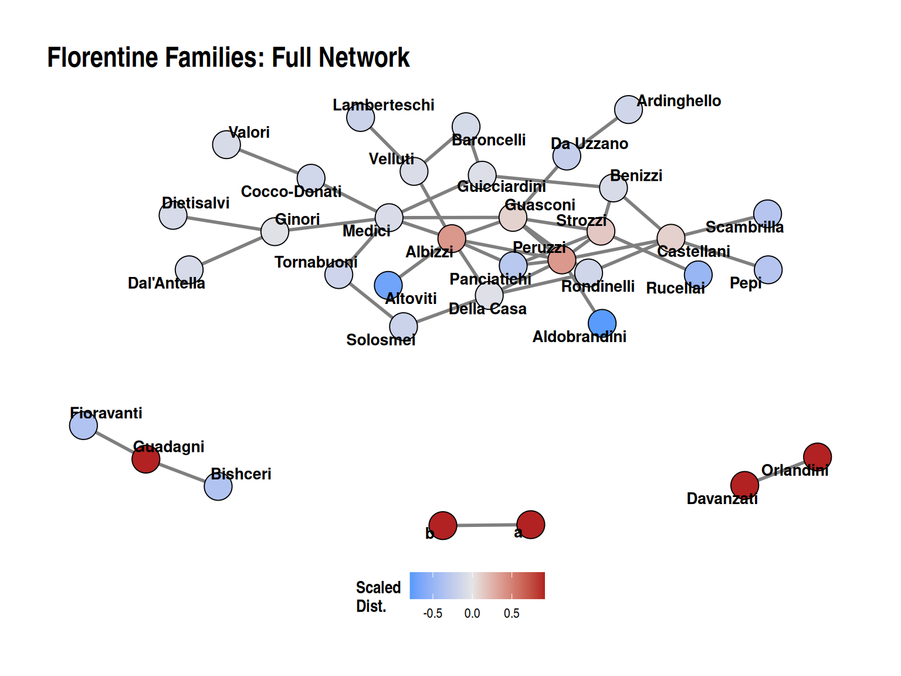

Code
library(igraph)
library(dplyr)
library(networkdata)
library(patchwork)
library(DT)
library(ggplot2)
library(ggraph)
source("../Functions/distinction.R")
source("../Functions/plot.graph.norm.R")This page provides examples of how to compute and visualize distinction centrality using classic network datasets: Zachary’s Karate Club and the Florentine Families (Medici).
We load the classic Karate Club network and compute distinction centrality.
We remove the Club President (Node 34) to observe the shifts in structural leverage.
The comparison highlights how the network hierarchy shifts in the absence of a primary broker. In the full network, the club president (Node 34) commands the highest distinction score, closely followed by the instructor (Node 1). Both act as central brokers for their respective factions.
When the president is removed, the distinction scores of the remaining members are recalculated based on their new relative network positions. The instructor (Node 1) experiences significant gains in distinction centrality, taking over as the absolute primary broker in the fragmented structure. Meanwhile, nodes that relied heavily on the president for their structural position (such as Node 33) experience a drop in their relative distinction ranking. This illustrates how individual distinction is intrinsically linked to the presence or absence of key central players.
We can also apply the distinction metric to Padgett & Ansell’s (1993) Florentine Families dataset.

The Medici family stands out with the highest distinction score, reflecting their powerful broker position connecting multiple family cliques.